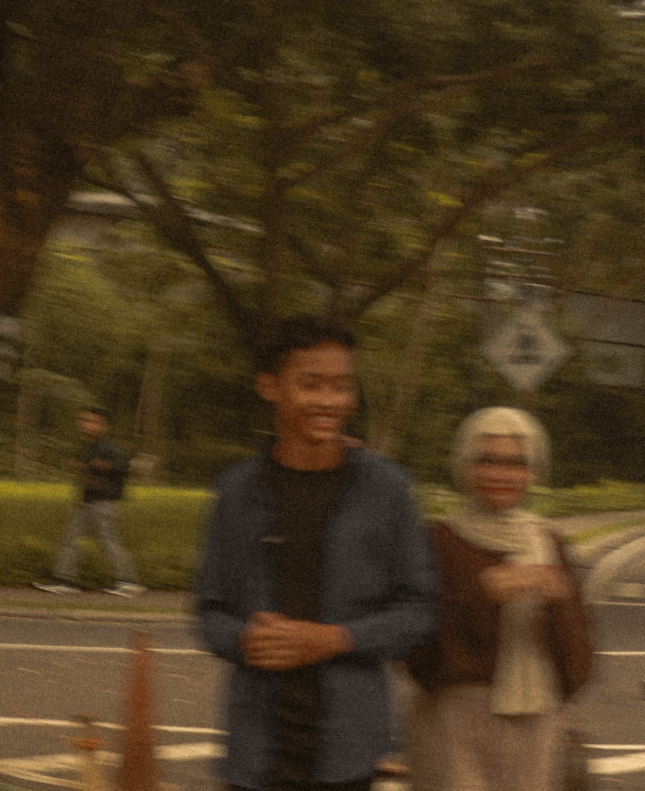
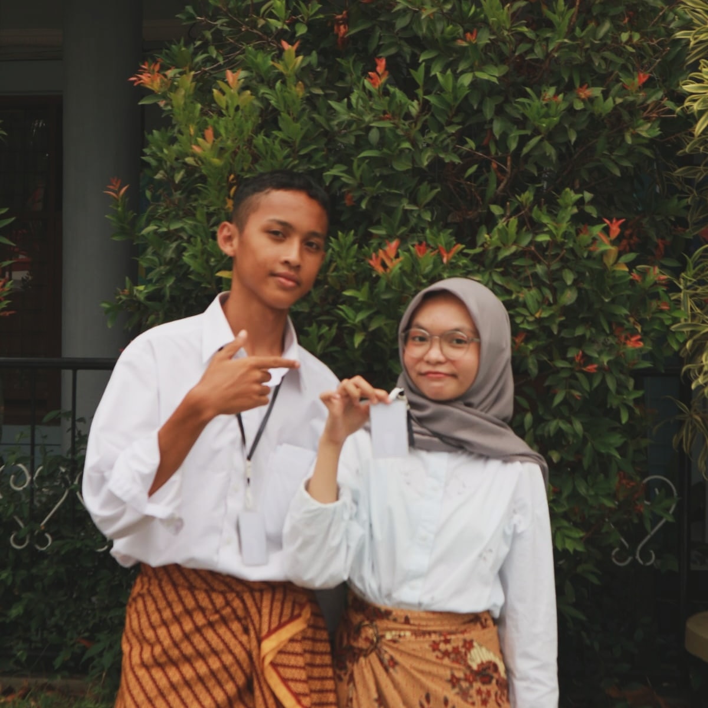
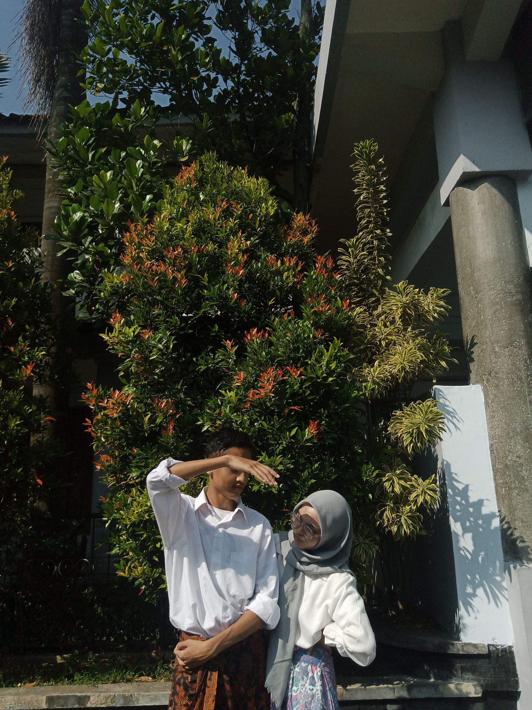
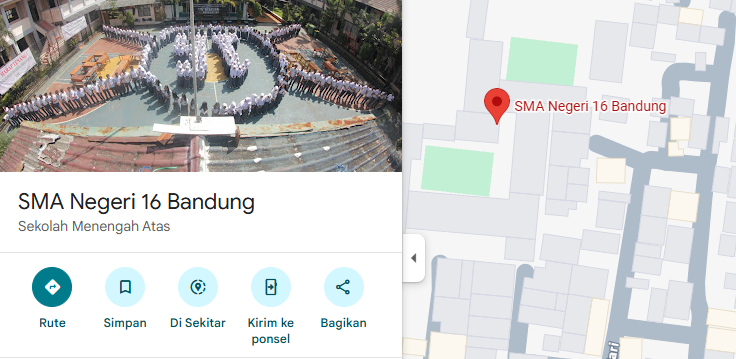
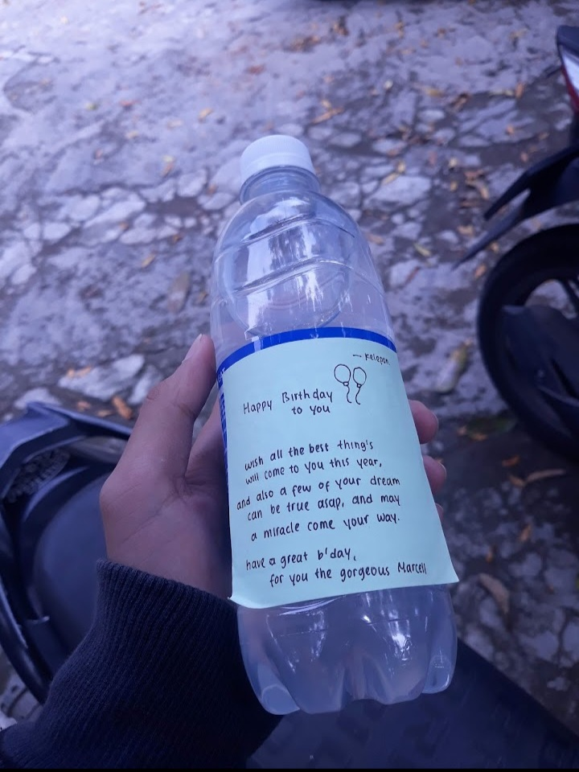
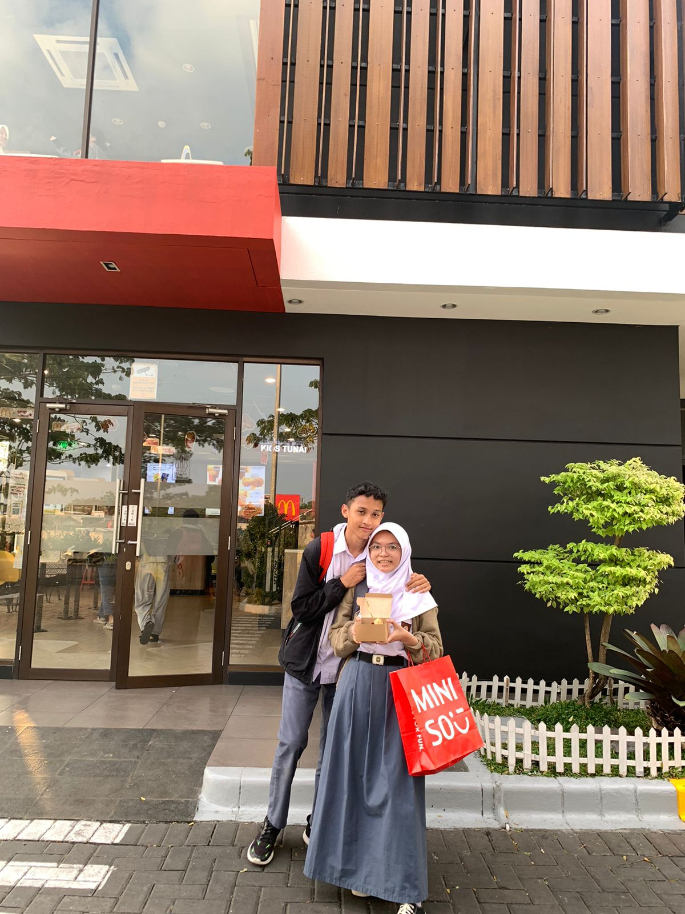
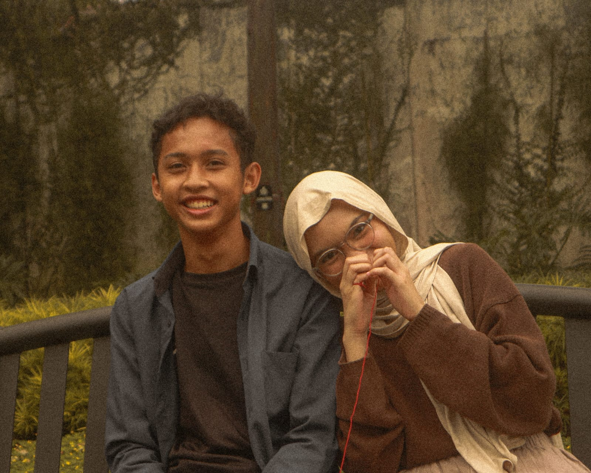

Untukmu, Bunga Lily-ku
"Web ini ku buat untuk mengungkapkan apa yang tak tersampaikan oleh bibir, dan untuk kenangan yang tak ingin ku lupakan."
Galeri Kita


Tempat Pertama Kita Tertawa

Garis Waktu
2022
Pertama Kenal
Awal dari segalanya. Momen dimana L mulai tertulis.
2023
Aku Memilihmu

Tahun dimana aku sadar, kamu adalah "I"-ku.
2024
Banyak Cerita
Tahun penuh warna, suka dan duka kita lewati bersama.
Sekarang / 2026
Aku Belajar
Menjadi M yang lebih baik, untukmu dan diriku sendiri.